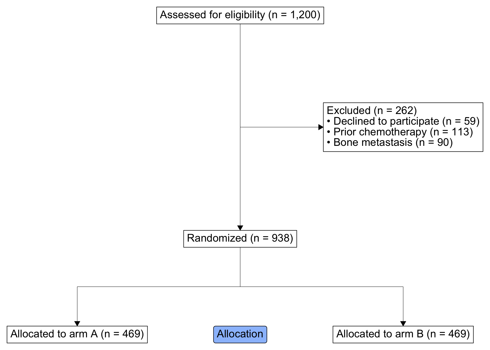

Overview
The goal of ggconsort is to provide convenience functions for creating CONSORT diagrams with ggplot2. ggconsort segments CONSORT creation into two stages: (1) counting and annotation at the time of data wrangling, and (2) diagram layout and aesthetic design. With the introduction of a ggconsort_cohort class, stage (1) can be accomplished within dplyr chains. Specifically, the following functions are implemented inside a dplyr chain to define a ggconsort_cohort:
-
cohort_start()initializes aggconsort_cohortobject which contains a labeled copy of the source data -
cohort_define()constructs cohorts that are variations of the source data or other cohorts -
cohort_label()adds labels to each named cohort within theggconsort_cohortobject
Stage 2 makes use of three ggconsort consort_ verbs which equip the ggconsort_cohort object with ggconsort properties. The ggconsort object can be viewed with ggplot via geom_consort() + theme_consort(). plot and print methods are also available for the ggconsort object for visually iterative development.
-
consort_box_add()adds a text box to the CONSORT diagram, at arow/colgrid position (laid out automatically at draw time) or at explicit coordinates -
consort_arrow_add()adds an arrow to the CONSORT diagram -
consort_line_add()adds a line (without an arrow head) the CONSORT diagram -
consort_stage_add()adds a stage badge (e.g. “Allocation”) to a row/column layout
Installation
You can install the released version of ggconsort from GitHub with:
# install.packages("devtools")
devtools::install_github("tgerke/ggconsort")Usage
To demonstrate usage, we use a simulated dataset within ggconsort called trial_data, which contains 1200 patients who were approached to participate in a randomized trial comparing Drug A to Drug B.
library(ggconsort)
head(trial_data)
#> # A tibble: 6 × 5
#> id declined prior_chemo bone_mets treatment
#> <int> <int> <int> <int> <chr>
#> 1 65464 0 0 0 Drug A
#> 2 48228 0 0 0 Drug B
#> 3 92586 0 0 0 Drug A
#> 4 70176 0 0 0 Drug B
#> 5 89052 0 0 0 Drug A
#> 6 97333 0 0 0 Drug BOf the 1200 approached patients, only a subset were ultimately randomized: some declined to participate or were ineligible (due to prior chemotherapy or bone metastasis). We will use ggconsort verbs and geoms to count the patient flow and represent the process in a CONSORT diagram.
We first define the ggconsort_cohort object (study_cohorts) in the following dplyr chain.
library(dplyr)
study_cohorts <-
trial_data %>%
cohort_start("Assessed for eligibility") %>%
# Define cohorts using named expressions --------------------
# Notice that you can use previously defined cohorts in subsequent steps
cohort_define(
consented = .full %>% filter(declined != 1),
consented_chemonaive = consented %>% filter(prior_chemo != 1),
randomized = consented_chemonaive %>% filter(bone_mets != 1),
treatment_a = randomized %>% filter(treatment == "Drug A"),
treatment_b = randomized %>% filter(treatment == "Drug B"),
# anti_join is useful for counting exclusions -------------
excluded = anti_join(.full, randomized, by = "id"),
excluded_declined = anti_join(.full, consented, by = "id"),
excluded_chemo = anti_join(consented, consented_chemonaive, by = "id"),
excluded_mets = anti_join(consented_chemonaive, randomized, by = "id")
) %>%
# Provide text labels for cohorts ---------------------------
cohort_label(
consented = "Consented",
consented_chemonaive = "Chemotherapy naive",
randomized = "Randomized",
treatment_a = "Allocated to arm A",
treatment_b = "Allocated to arm B",
excluded = "Excluded",
excluded_declined = "Declined to participate",
excluded_chemo = "Prior chemotherapy",
excluded_mets = "Bone metastasis"
)We can have a look at the study_cohorts object with its print and summary methods:
study_cohorts
#> A ggconsort cohort of 1200 observations with 9 cohorts:
#> - consented (1141)
#> - consented_chemonaive (1028)
#> - randomized (938)
#> - treatment_a (469)
#> - treatment_b (469)
#> - excluded (262)
#> - excluded_declined (59)
#> - excluded_chemo (113)
#> ...and 1 more.
summary(study_cohorts)
#> # A tibble: 10 × 3
#> cohort count label
#> <chr> <int> <chr>
#> 1 .full 1200 Assessed for eligibility
#> 2 consented 1141 Consented
#> 3 consented_chemonaive 1028 Chemotherapy naive
#> 4 randomized 938 Randomized
#> 5 treatment_a 469 Allocated to arm A
#> 6 treatment_b 469 Allocated to arm B
#> 7 excluded 262 Excluded
#> 8 excluded_declined 59 Declined to participate
#> 9 excluded_chemo 113 Prior chemotherapy
#> 10 excluded_mets 90 Bone metastasisNext, we lay out the diagram. Boxes declare a row and col grid position instead of coordinates: col = "main" (the default) is the central spine, "side" puts a box to the right, and numbers give finer control (the arms below sit at columns -1 and 1). Arrows just connect boxes by name — vertically within a column, horizontally within a row, and end = c("arm_a", "arm_b") draws the T-split into the study arms. ggconsort measures every box when the plot is drawn and spaces the grid to fit the device, so there are no coordinates to fiddle with and nothing gets clipped. Note also cohort_count_adorn(), a convenience function that glues cohort counts to their labels.
library(ggplot2)
study_consort <- study_cohorts %>%
consort_box_add(
"full", row = 1, label = cohort_count_adorn(study_cohorts, .full)
) %>%
consort_box_add(
"exclusions", row = 2, col = "side", label = glue::glue(
'{cohort_count_adorn(study_cohorts, excluded)}<br>
• {cohort_count_adorn(study_cohorts, excluded_declined)}<br>
• {cohort_count_adorn(study_cohorts, excluded_chemo)}<br>
• {cohort_count_adorn(study_cohorts, excluded_mets)}
')
) %>%
consort_box_add(
"randomized", row = 3, label = cohort_count_adorn(study_cohorts, randomized)
) %>%
consort_box_add(
"arm_a", row = 4, col = -1,
label = cohort_count_adorn(study_cohorts, treatment_a)
) %>%
consort_box_add(
"arm_b", row = 4, col = 1,
label = cohort_count_adorn(study_cohorts, treatment_b)
) %>%
consort_arrow_add(start = "full", end = "randomized") %>%
consort_arrow_add(start = "full", end = "exclusions") %>%
consort_arrow_add(start = "randomized", end = c("arm_a", "arm_b")) %>%
consort_stage_add("Allocation", row = 4, col = "main")
study_consort %>%
ggplot() +
geom_consort() +
theme_consort()
Prefer to place things by hand? consort_box_add() and consort_arrow_add() also accept explicit coordinates — see ?consort_box_add.
At this point, we are ready for analysis. The following retrieves the desired data frame of randomized subjects:
study_cohorts %>%
cohort_pull(randomized)
#> # A tibble: 938 × 5
#> id declined prior_chemo bone_mets treatment
#> <int> <int> <int> <int> <chr>
#> 1 65464 0 0 0 Drug A
#> 2 48228 0 0 0 Drug B
#> 3 92586 0 0 0 Drug A
#> 4 70176 0 0 0 Drug B
#> 5 89052 0 0 0 Drug A
#> 6 97333 0 0 0 Drug B
#> 7 80724 0 0 0 Drug A
#> 8 65186 0 0 0 Drug B
#> 9 48837 0 0 0 Drug A
#> 10 99005 0 0 0 Drug B
#> # ℹ 928 more rows